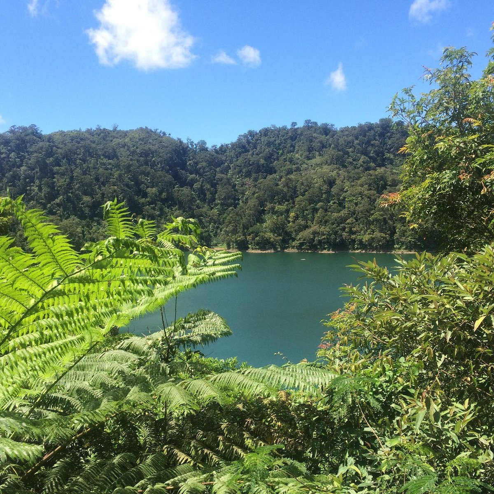

About Sibulan
Nestled in the picturesque province of Negros Oriental, Sibulan is a hidden gem waiting to be explored.
Whether you're a local resident or a curious traveler, our site is your go-to resource for everything
Sibulan has to offer. From the serene beauty of the Balinsasayao Twin Lakes to the vibrant community
life, we invite you to discover the charm and warmth of our beloved town. Dive into our rich history,
explore breathtaking landscapes, and stay updated on local events.
Welcome to Sibulan, where adventure meets tranquility.
-A sneak peak to the beauty of Sibulan-
Tourist Spots
Here are some of Sibulan's Famous Tourist spots that you definitely should visit!
-

Balinsasayao Twin Lakes
A tranquil retreat and a haven for nature lovers and adventure seekers.
-
Our Lady's Garden
Peace and reflection amidst beautifully landscaped gardens and devotional spaces dedicated to Our Lady.
-
Looc Memorial Shrine
Honors the valiant heroes of World War II, offering visitors a place for remembrance and reflection amid its serene and historic setting.
-
Puncak Tanawan
Balugo SibulanA popular trekking spot known for its stunning sunrise views and sweeping vistas of lush greenery and distant mountains.
-
San Antonio De Padua Church
A testament to faith and tradition, captivating visitors with its historic charm and serene ambiance.
-

La Preza
Highland ViewA tranquil retreat nestled amidst verdant hills, providing a serene escape from the hustle and bustle of city life.
{kind=link}
{kind=link}
{kind=link}
{kind=link}
{kind=link}
Transportations
Travel with these mode of transportations!
Easyride
Provides a warm and convenient way for tourists to explore the beautiful surroundings of the region.
Ceres Bus
Offers tourists a comfortable and reliable means of exploring the scenic destinations and vibrant culture of the region.

Pedicab
Offers tourists a charming and eco-friendly way to navigate the town and enjoy its local sights.
Potpot
Provides tourists with a unique and eco-friendly way to leisurely explore the town and its attractions.
Accomodations
Need a place to stay? No worries, we got you!
Welcome to Bravo Hotel, nestled in the picturesque coastal town of Sibulan, where guests can unwind amidst stunning ocean vistas, indulge in modern amenities, and immerse themselves in the warmth of Filipino hospitality for an unforgettable getaway.
Discover Victoria's Hotel, a charming boutique retreat located in the heart of Sibulan, where guests are treated to personalized service, elegant accommodations, and a serene ambiance, promising a memorable stay in paradise.

Escape to the enchanting Casa Margaritha, a hidden gem in Sibulan offering guests a harmonious blend of rustic charm and modern comfort, set against the backdrop of lush tropical gardens and just moments away from pristine beaches, promising a tranquil retreat for the soul.
Experience the epitome of coastal luxury at Sea View Beach Resort, where azure waters meet pristine sands, and guests indulge in unparalleled relaxation amidst panoramic ocean vistas, impeccable service, and an array of enticing amenities, ensuring an idyllic seaside getaway in Sibulan.
Delicacies
Fill your cravings with foods from Sibulan!
Budbud Kabog
This is a unique type of rice cake made from millet and is often enjoyed with hot chocolate or coffee. It is wrapped in banana leaves and has a distinct flavor and texture that sets it apart from other rice cakes.
Chicken Halang-Halang
This spicy chicken dish is cooked in coconut milk with lemongrass, papaya, and hot pepper leaves. It's a favorite comfort food in the area, known for its rich and spicy flavor.

Suman
Another rice cake variant, suman is made from glutinous rice cooked in coconut milk and wrapped in banana leaves. It's a popular snack and pasalubong (souvenir) item.
Kagang
This local delicacy features crabs cooked in a variety of ways, often with coconut milk and local spices. It's a specialty that showcases the fresh seafood available in the region.
Inato
A style of grilled chicken that is marinated with a special blend of spices and grilled to perfection. It’s commonly served with a side of dipping sauce and rice, making it a savory option compared to the sweeter treats.
Sikwati
A traditional Filipino hot chocolate made from tablea (tablets of pure cacao) mixed with hot water and sometimes with milk and sugar. It's typically served with local bread or rice cakes.
Puto Maya
A type of glutinous rice cake made from sticky rice (also known as malagkit), coconut milk, and ginger. It's often served with ripe mangoes or hot sikwate.
Biko
Another type of rice cake made from glutinous rice, coconut milk, and brown sugar. It's cooked until it becomes sticky and sweet and is often topped with latik (coconut caramel).
Dried Fish (Daing)
Sibulan, being a coastal municipality, offers various types of dried fish (daing), which are commonly eaten as a side dish or used to flavor dishes.
Binagol
A native delicacy made from mashed taro (gabi) mixed with coconut milk, sugar, and sometimes peanuts or chocolate. It's traditionally wrapped in banana leaves and steamed until cooked.
Contact Us
Leave a Message!
Contact Us
Dr. V.Locsin Street, Dumaguete City, Philippines
Phone#: 09282100875
aalumapguid.student@asiancollege.edu.ph